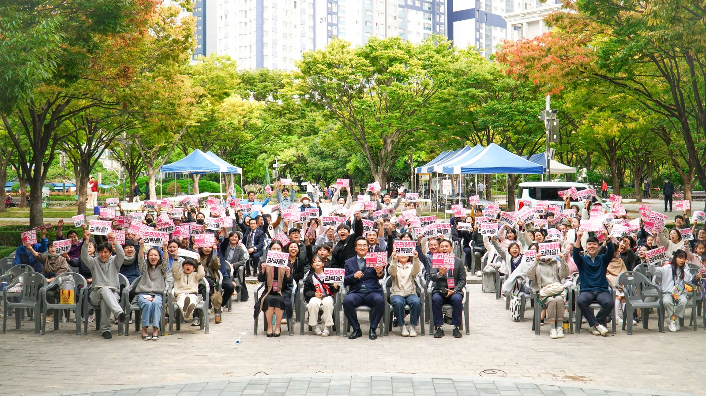

노정현과 함께! 일하는 구의원 김문노
지킬 수 있는 약속을 하고, 반드시 지켜내겠습니다.


일하는 청년후보 김문노
공약이행률 96%+ 연제구의원이 되겠습니다!
96%+
공약이행률
매년 수 천건의 주민 요구를 조사해 연제주민대회(5회째)를 개최했습니다.
가장 요구가 높은 5개 안을 들고 구청과 협의했습니다.
언제나 주민분들은 해답을 갖고 계셨습니다.
<배산 유아숲 화장실 설치>
<워킹스쿨버스(등하교 안전지도사) 조례 상정>
<첫째부터 출산지원금 지급>
주민분들과 진보당이 한목소리로 요구했기에 가능했습니다.
주민분들의 힘과 지혜가 모이면 못해낼 일이 없습니다!
주민과 함께 구의원이 되어 더 많은 일을 하겠습니다.